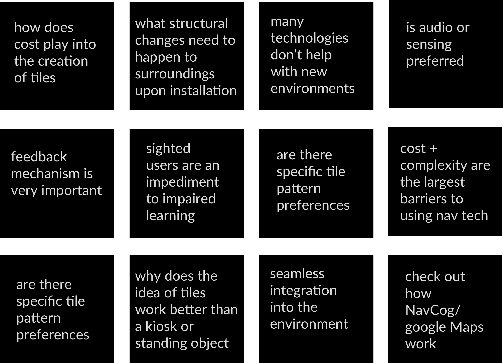

01 Overview
8 Weeks, Fall 2019 - Ongoing
Sketch, Fusion 360, Procreate, Rapid Prototyping (CNC/MakerBot), Arduino, Vacuum Former, User Research Methods
Product Design + Survey Design + Conducting and Analyzing Interviews/Surveys
02 Challenge
Project AskCreate an interactive tactile tile that can be used to improve the 'last meter problem' that is experienced by the blind or visually impaired. The hope is that the tactile tiles can be sold in a kit and used as a low-cost method for solving this problem.
Independent mobility remains a challenge experienced by people who are blind or visually impairedas a person may reach a general area but may encounter difficulty or lack the information to get to a very specific destination. Currently available navigation techniques (GPS, Bluetooth beacons, etc) are capable of supporting navigation to within 5m of a desired target, however, are not capable of robust navigation and spatial tasks in the 2-3 meter range.
We hope to improve navigation for blind or visually impaired persons through a low-cost, effective solution. Additionally, our team will be publishing a paper on our findings!
03 Current Stage
Our approach to solving this problem is by using tactile surfaces or textured ground surfaces that one can sense through touch or by walking on them, perhaps in combination with some bluetooth/audio tool.

user research
Currently, we have built a basic working prototype and are looking to test it with blind users through:
01 an informal Twitter survey
02 a formal codesign session on tile patterns and uses
The survey has received IRB approval and is now in the process of being sent out on Twitter.


04 Approach
problem space exploration
Going into this project, I had limited knowledge of visually impaired or blind users. I tried to learn about common navigation problems, tactile pavers, and current technology that exists for the visually impaired. The hope was to be able to come up with some guiding questions and takeaways.

prototyping
Once we had a foundation, we started the 3D fabrication process of building tiles. For the initial prototype, we wanted to build a generic tile that could be used to sense any kind of pressure. The goal was to:
01 build something that could be uses in interviews with users
02 integrate with some audio or haptic sensing information

tile molds
Creating a mold that we could use for prototyping was the first step. We originally tried to 3D print tiles using a Makerbot, but due to the excessive time required, we switched over to a CNC for tile production. These tile molds were used to later mold the plastic and velostat for our initial prototype.

materials experimentation
We wanted something that could take pressure when stepped on. Thus, we used a combination of plastic and velostat - the plastic to withstand pressure and the velostat to sense pressure in partnership with an Arduino.
ABS plastic and placing the heat source under the plastic worked best for us.

vacuum forming
We ended up using an advanced vaccum forming machine, although the hope is that we can still find a low-cost alternative for kits.

arduino
The purpose of the Arduino is to be able sense pressure - the potential pressure that would come from stepping on a tile or using a cane to press down on a tile. We wanted to see what sort of data we could collect to better understand the feedback we could give to a user. We used copper tape to ensure conductivity between the two pieces. You can see videos of the two separate parts to the right!

05 Reflection
The next step is to integrate audio and pressure sensing. Then, we hope to gather results of the Twitter survey and conduct in person interviews while continuing to build out the technology. The final product would be some sort of toolkit that we could hand-off so people can make interactive tiles within the buildings or outdoor spaces that they need them in.
My experience with the accessibility team has been extremely rewarding. I learned about so many prototyping tools and technologies in such a short period of time.